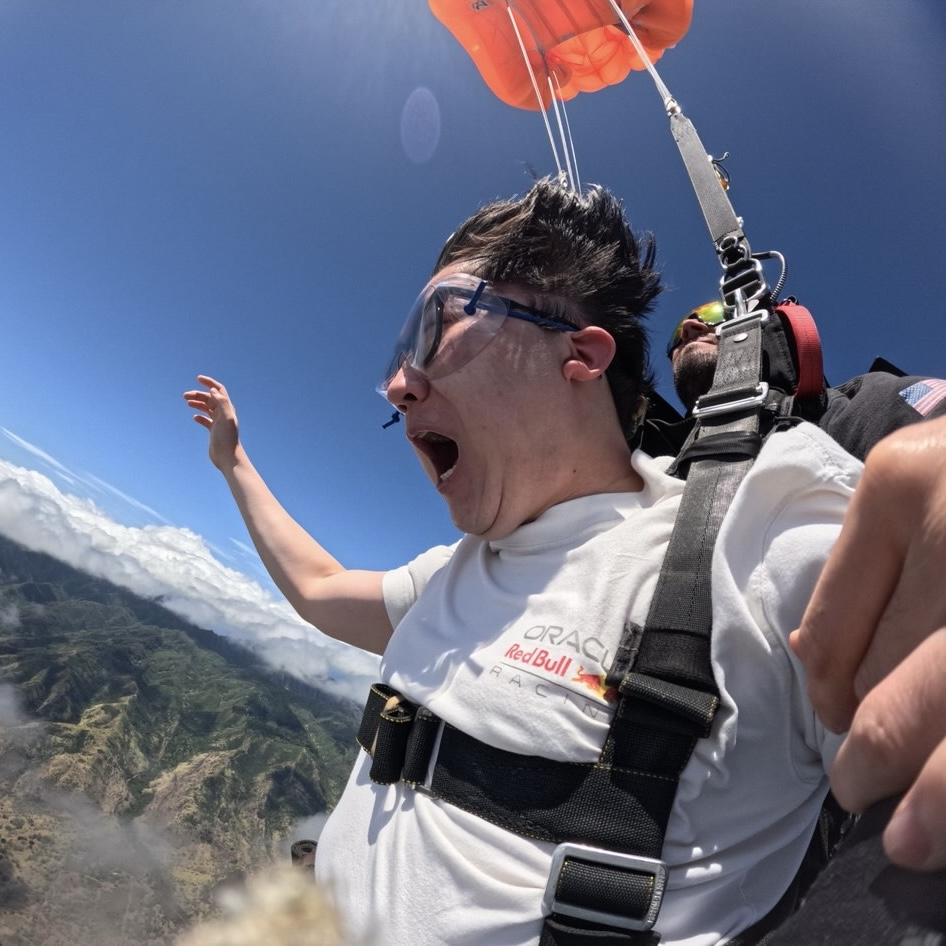
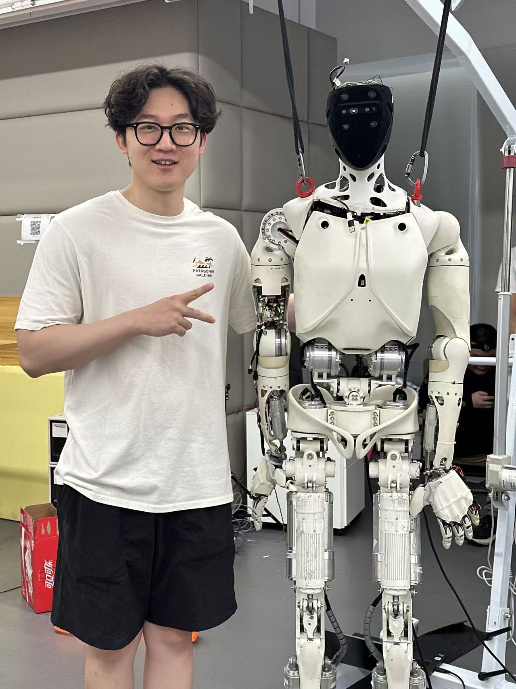
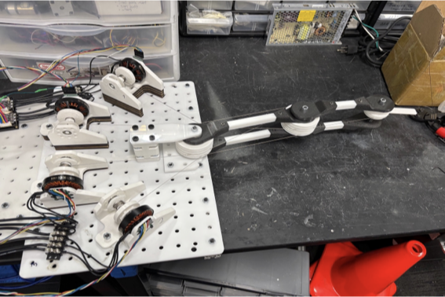
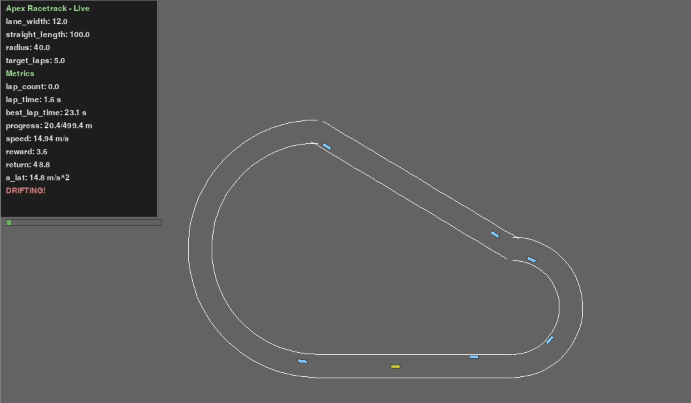
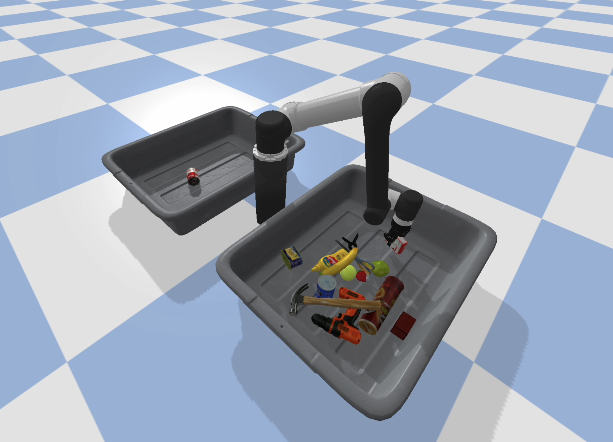

|
Yazhou (Harry) Zhang I am an M.S. student in Mechanical Engineering at Stanford University. My interests are in robotics, with a focus on modeling & control, dexterous manipulation, and robot perception. I enjoy building end-to-end robotic systems—from perception and state estimation to motion planning and feedback control—and validating them in simulation and on hardware. |

|
Industrial Experience |
|  |
Embodied Intelligence Intern | Shenzhen, China | 05/2025 – 09/2025 Worked on contact-rich manipulation for a humanoid dexterous hand, including compliance control, optimization-based retargeting, and learning-based manipulation pipelines. |
Research Experience |
|  |
Research Project | Stanford University | 01/2025 – 03/2025 Developed impedance/torque control and stiffness perception for a tendon-driven arm, enabling adaptive interaction with objects of varying stiffness. demo |

|
Research Project | University of Toronto | 05/2023 – 08/2023 Developed a low-cost wearable gait monitoring system, with emphasis on hardware validation, signal processing, and data optimization for robust real-world deployment across diverse terrains. |
Recent Projects |
|  |
AA228: Decision Making Under Uncertainty | 09/2025 – 12/2025 PPO-based autonomous racing with dynamic opponents and occupancy-grid observations. video / report |
|  |
EE227: Robot Perception | 09/2025 – 12/2025 Compared U-Net + ICP modular perception with end-to-end action affordance learning. video (modular) / video (end-to-end) |

|
CS225A: Experimental Robotics | 03/2025 – 06/2025 Built a sim-to-real pipeline and hierarchical FSM integrating perception, planning, and control. video / report |

|
CS224R: Final Project | 03/2025 – 06/2025 Adaptive chunk-length selection on top of a frozen ACT policy using a PPO-trained selector. report / poster |
|
Template adapted from Jon Barron. |